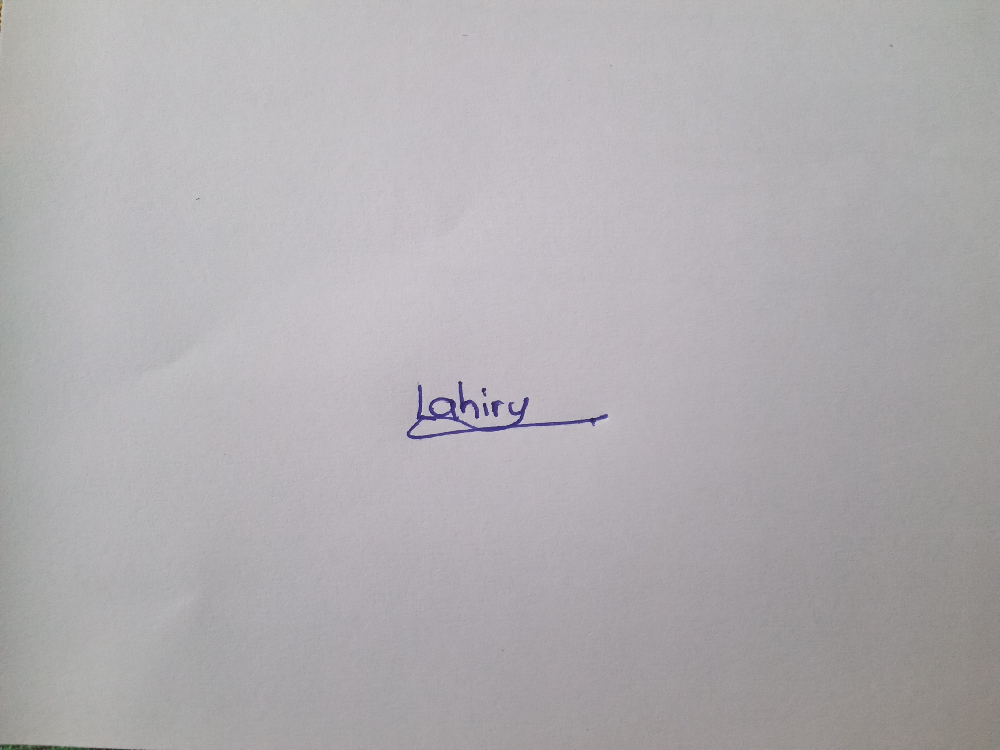

Donate & Help

CONTACT WITH US
office: 0112362549
E-mail: DonateHelp@gmail.com
WhatsApp: 0766987582
Facebook: Donate&Help
ABOUT
Home
Donate form
About us
More Information
POSTAL ADDRESS
Donate&Help Center,
105/A,
Station road,
Homagama.
- LV Sudasinghe (24101) 
- PME Harshani (23232)
- DPM Wijethilaka (22844)
- DWYS Kalhara (23177)
GROUP MEMBERS: